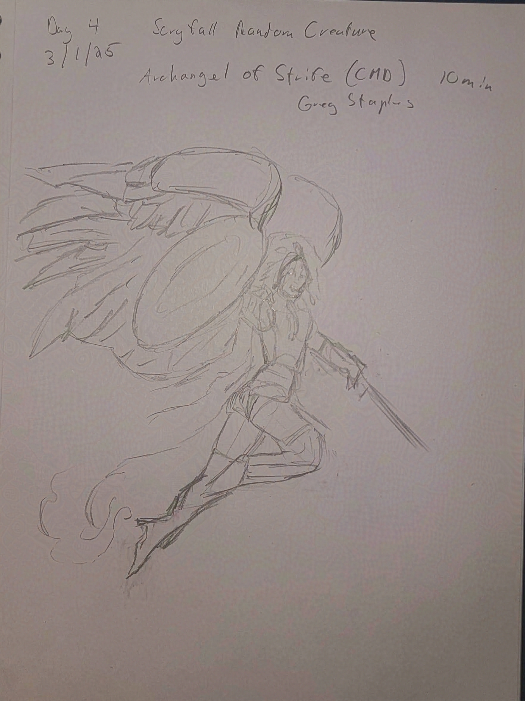
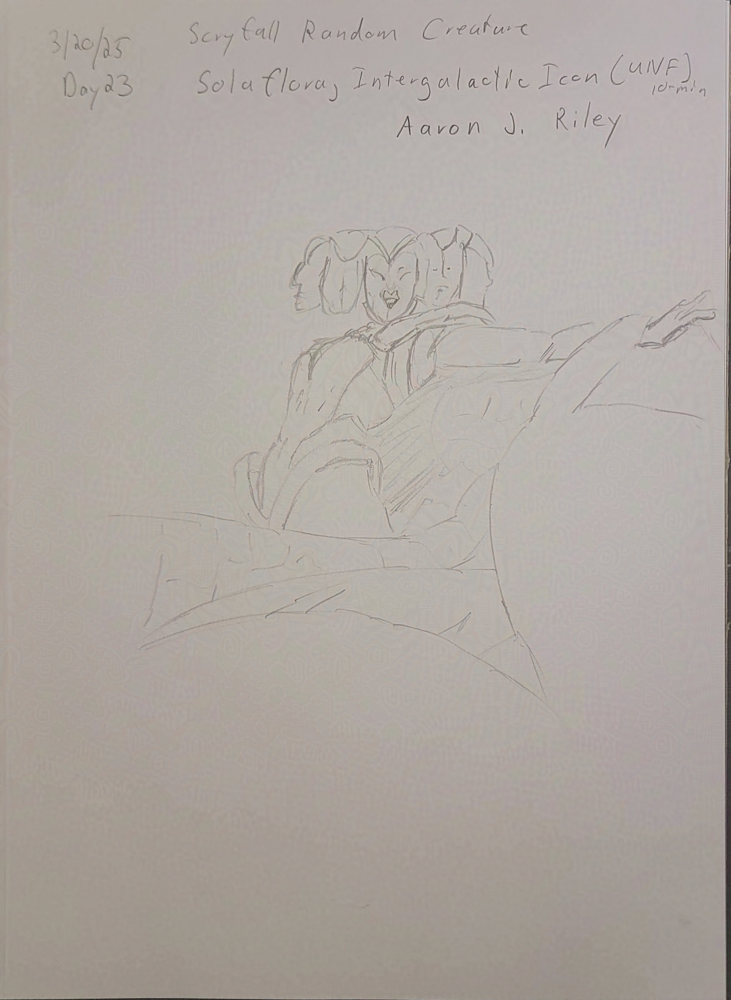
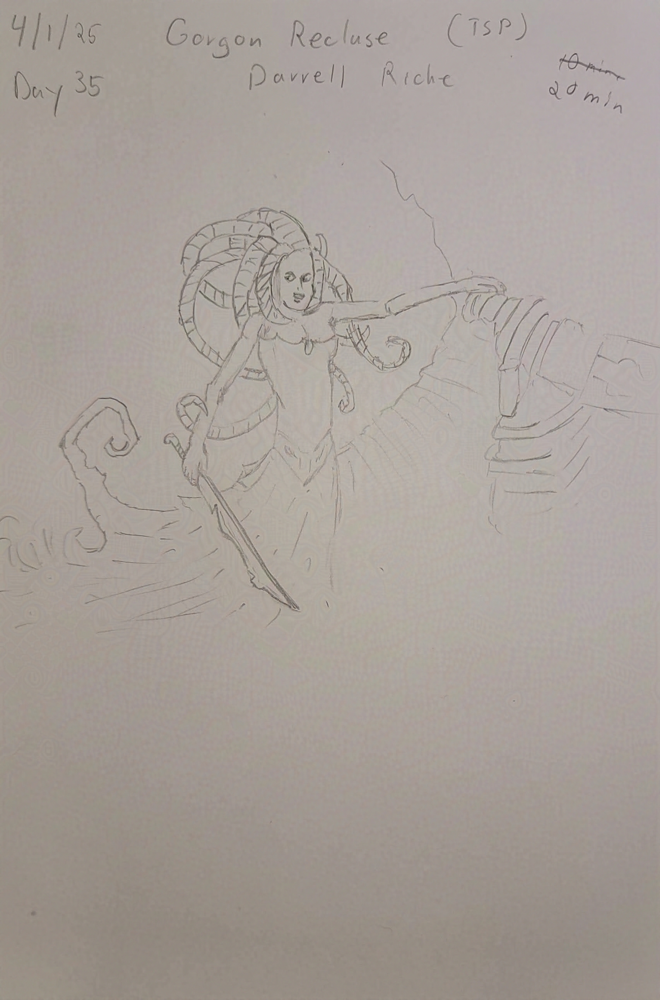
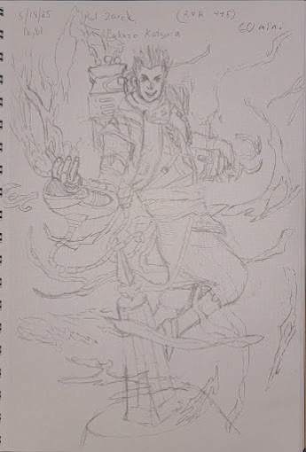
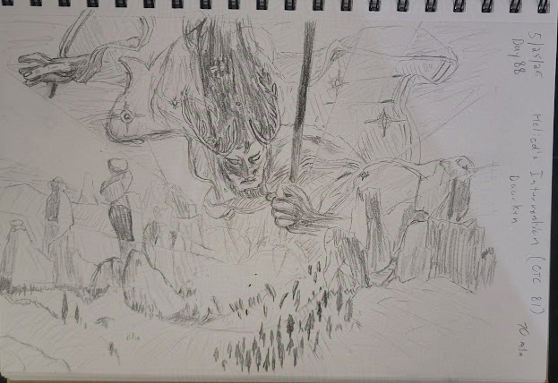
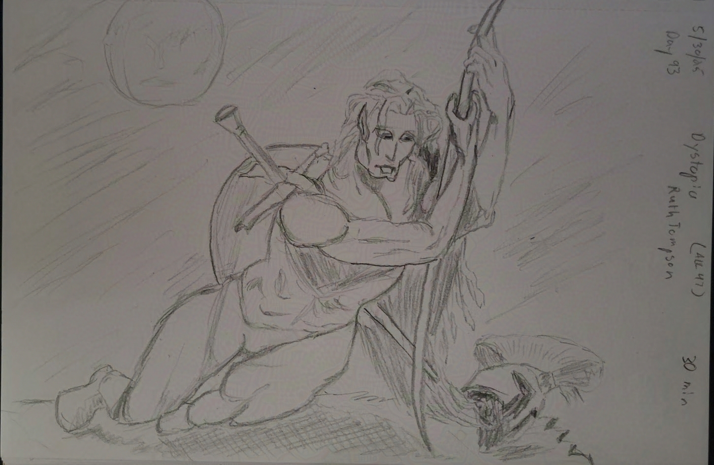
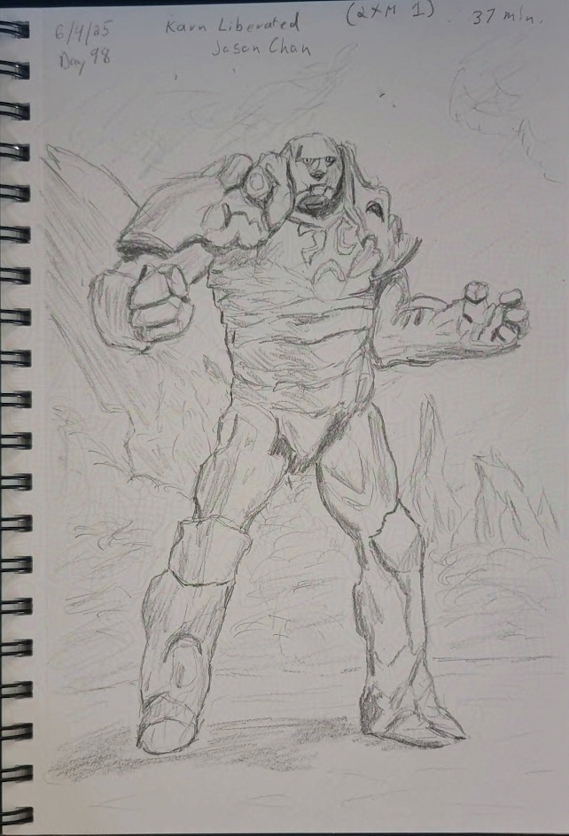
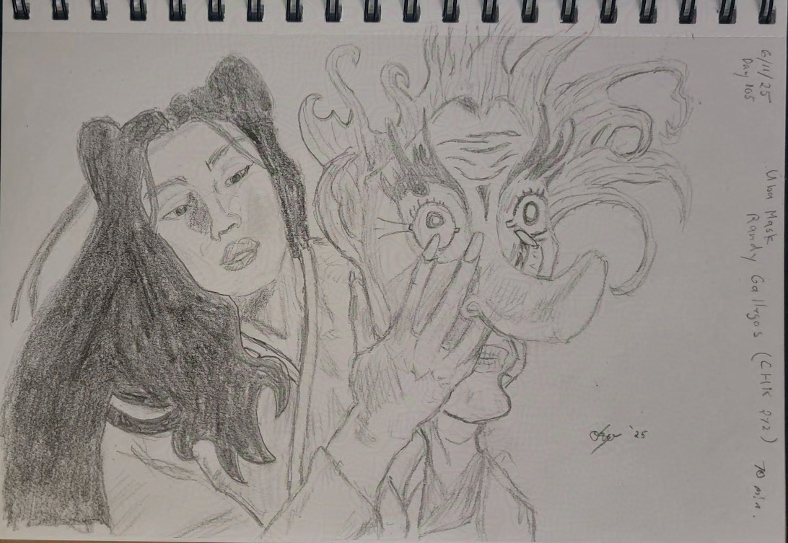
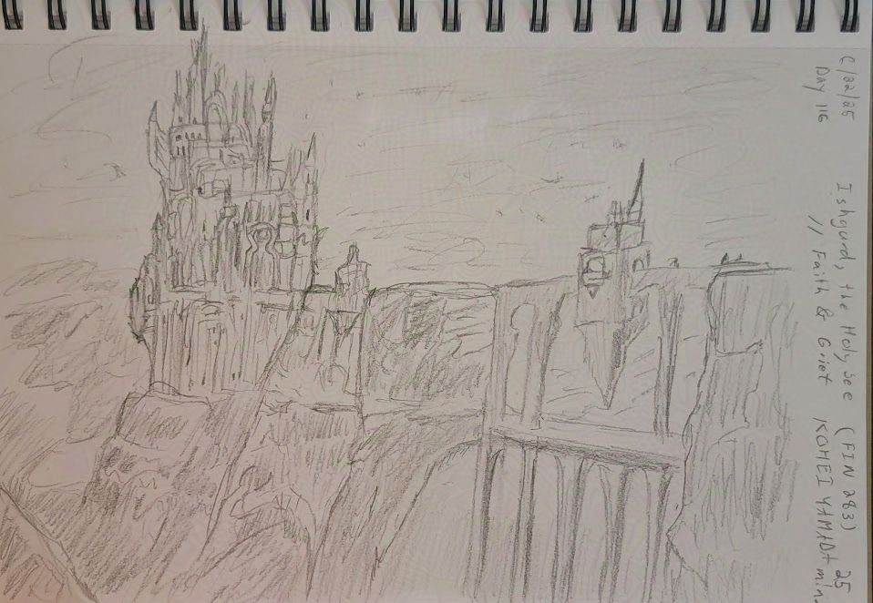
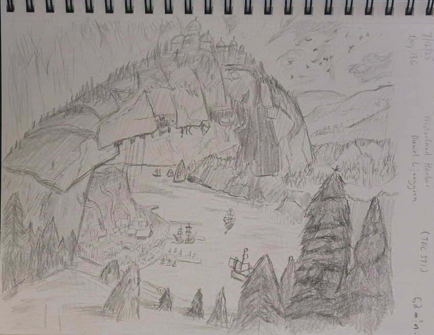

Currently displaying 0 sketches.


















| Waterkin Shaman (M20) | |
|---|---|
| Sketch Day | Day 1 (02/26/25) | Sketch Time | 10 minutes |
| Original Artist | Teong-Hao Han |
| Digital Version | None |
| Categories | Creature |
| Scryfall Link | |
 Moxfield
Moxfield